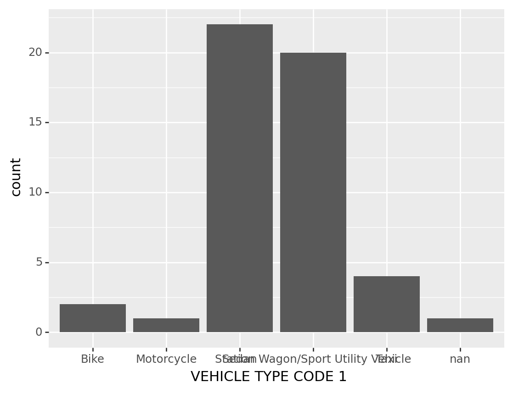
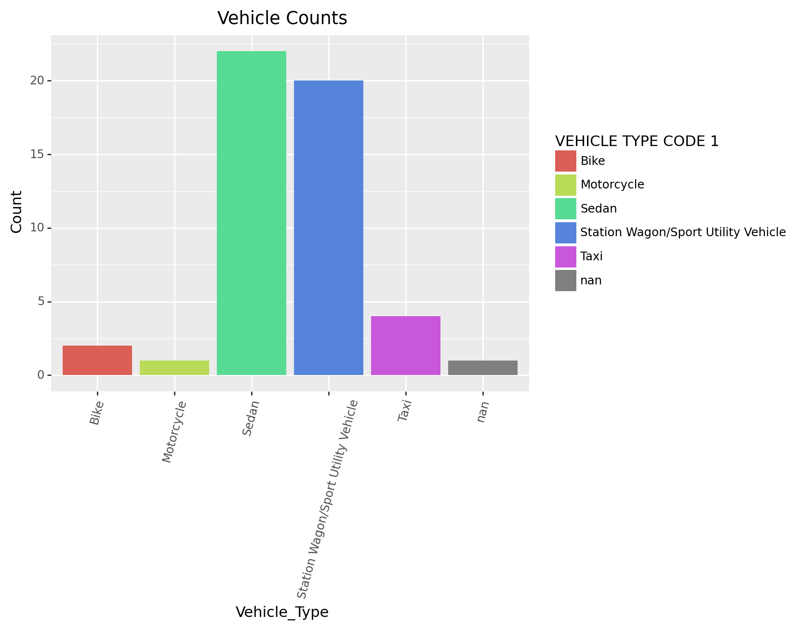
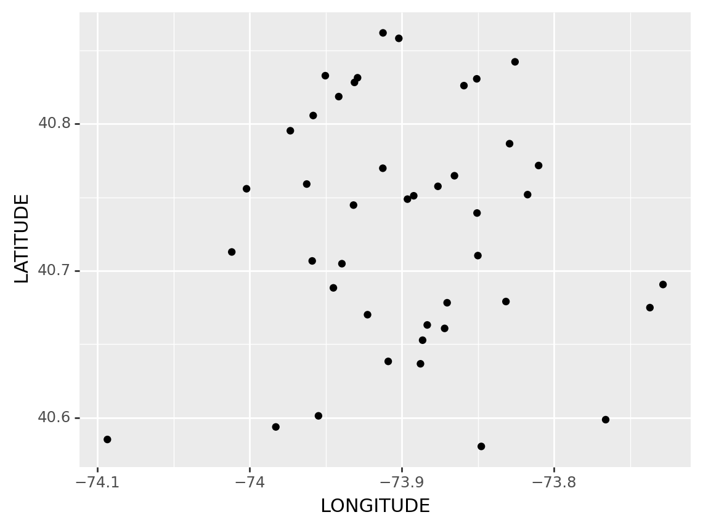
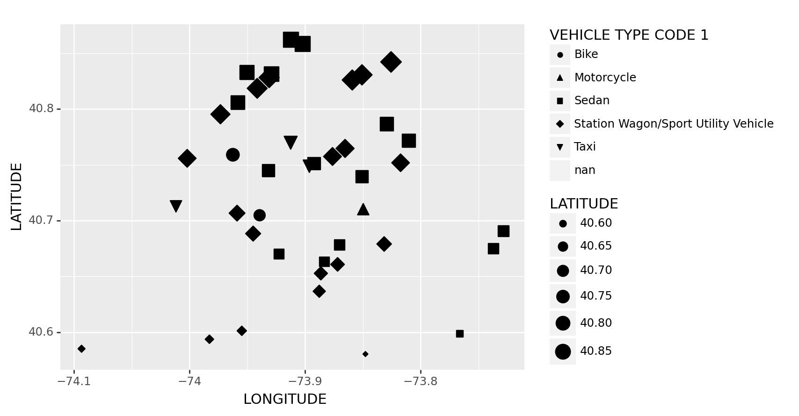
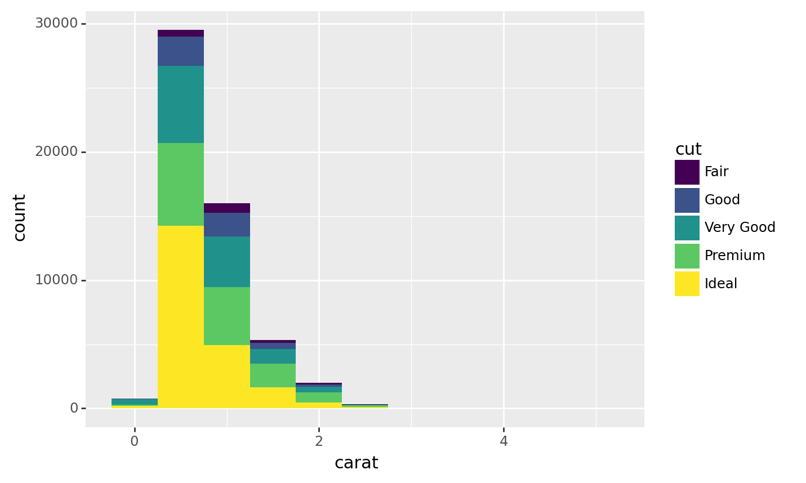
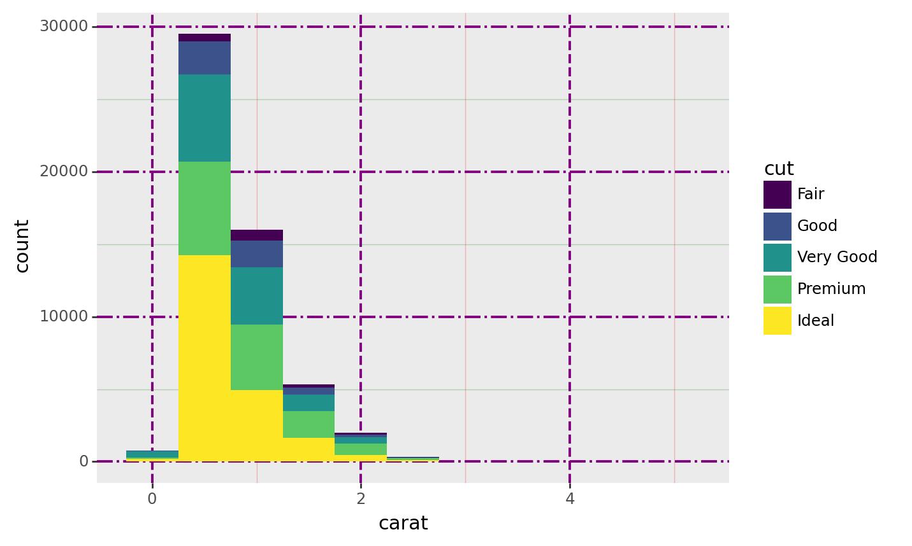
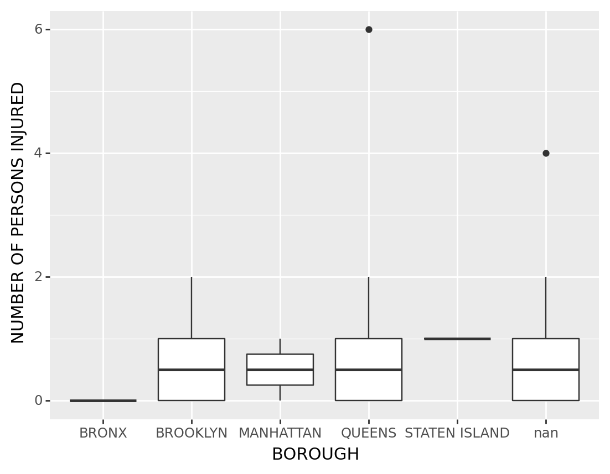
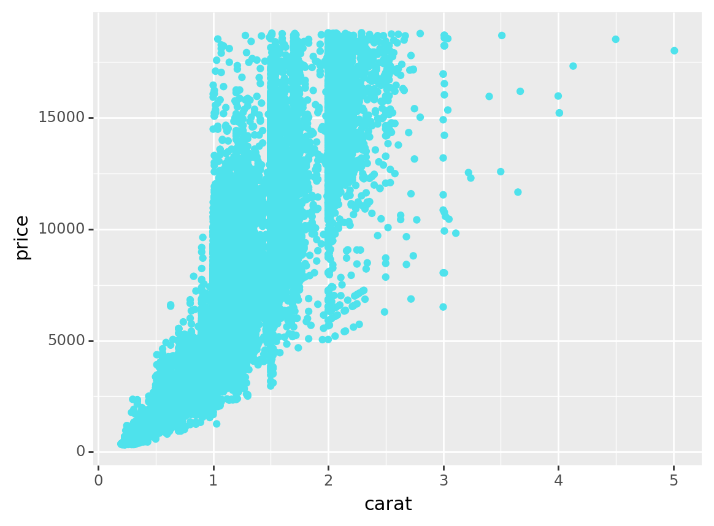
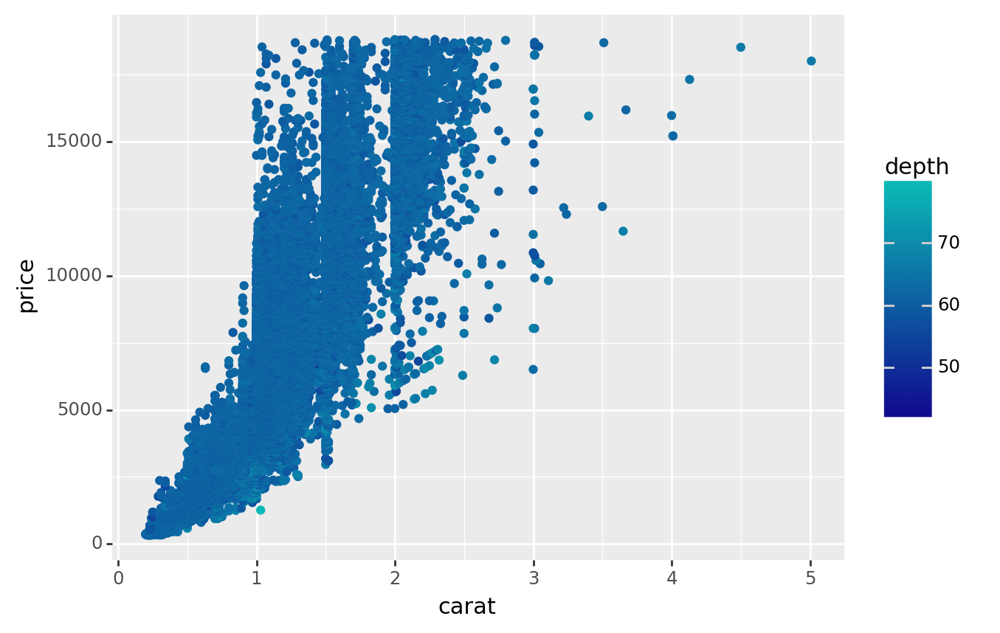

# pip install matplotlib7 Visualization
7.1 Matplotlib
The matplotlib library can provide methods in plotting and arranging data visually in order to help viewers understand the main concepts of the data analysis. In this chapter, a progression of graphs will be shown to demonstrate some of the capabilities the library has to graph and plot data.
There are several types of graphs that can be used, such as:
- Scatterplot
- Line plot
- 3D plot
The library can be installed using either pip or conda. For example:
7.1.1 Usage
Let’s start with a simple scatter plot. We would need to import the libraries as shown. For this example, we use the pyplot submodule, abbreviated to plt. We will use randomly generated data in 3 dimensions (x,y,z).
import pandas as pd
import numpy as np
import matplotlib.pyplot as plt
np.random.seed(8465);
x = np.random.uniform(0, 3, 10);
y = np.random.uniform(0, 3, 10);
z = np.random.uniform(0, 3, 10);
plt.scatter(x, y)
plt.xlabel('X')
plt.ylabel('Y')
plt.show()
We could start plotting another plot, but we have not saved our scatterplot as an object. Thus, it will get overridden by whatever we plot next. If we want to keep a plot, we can save as a figure object. In addition, if we need multiple plots together, we can use a subplot shown as follows.
figure, (fig1, fig2) = plt.subplots(1, 2, figsize = (8, 6))
fig1.scatter(y, z, marker = '^')
fig2.scatter(x, y, color = 'red')
plt.show()
We can also do 3d plots alongside 2d, but we need a different function in order to do so. The following uses 3d axes to plot the scatterplot.
figure = plt.figure()
# Make 3D axes for fig1
fig2 = figure.add_subplot(122, projection = '3d')
fig1 = figure.add_subplot(121)
# Plot
fig1.plot(x, z, label = "Line Graph")
fig2.scatter(x, y, z, c = z, cmap = 'cool', label = "Scatter in 3D")
fig1.legend()
fig2.legend()
plt.show()
7.1.2 Animation (to be completed)
Animations can also be done through matplotlib. This requires the use of the animation submodule which has a variety functions that can be used to plot animations. Inputs required include the frames and other functions needed to update the plots per frame.
import matplotlib.animation as animation
def updatept(self):
z = 10;We can use the FuncAnimation(args, updatept(), frames) to update.
7.1.3 Conclusion
We have demonstrated some capabilities of the matplotlib library but more complex methods of plotting and arranging visual elements can be found in the documentation.
7.2 GG-Plot with Plotnine
The plotnine package facilitates the creation of highly-informative plots of structured data based on the R implementation of ggplot2. The plotnine package is built on the top of Matplotlib and interacts well with Pandas.
7.2.1 Installation
We need to install the package from our command before we start to use it.
Using pip:
pip install plotnine
pip install plotnine[all] # For the whole package of PlotnineOr using conda:
conda install -c conda-forge plotnine`7.2.2 Import
Now we can call plotnine in our python code
import plotnine as p9
from plotnine import *
from plotnine.data import *7.2.3 Some fundimental plots via plotnine
Actually there are plenty plots that Plotnine can make, but because of the time limitation we will only introduce these four
- Bar Chart
- Scatter Plot
- Histogram
- Box Plot
Examples will be illustrated with the new york crash dataset, and since the dataset is too large, I will extract the first 50 crashes to do the illustration:
import pandas as pd
import numpy as np
df = pd.read_csv('data/nyc_crashes_202301.csv')
df1 = df.head(50)
df1.head()| CRASH DATE | CRASH TIME | BOROUGH | ZIP CODE | LATITUDE | LONGITUDE | LOCATION | ON STREET NAME | CROSS STREET NAME | OFF STREET NAME | ... | CONTRIBUTING FACTOR VEHICLE 2 | CONTRIBUTING FACTOR VEHICLE 3 | CONTRIBUTING FACTOR VEHICLE 4 | CONTRIBUTING FACTOR VEHICLE 5 | COLLISION_ID | VEHICLE TYPE CODE 1 | VEHICLE TYPE CODE 2 | VEHICLE TYPE CODE 3 | VEHICLE TYPE CODE 4 | VEHICLE TYPE CODE 5 | |
|---|---|---|---|---|---|---|---|---|---|---|---|---|---|---|---|---|---|---|---|---|---|
| 0 | 01/01/2023 | 14:38 | NaN | NaN | NaN | NaN | NaN | BROOKLYN QUEENS EXPRESSWAY RAMP | NaN | NaN | ... | Driver Inattention/Distraction | Driver Inattention/Distraction | NaN | NaN | 4594563 | Sedan | Sedan | Sedan | NaN | NaN |
| 1 | 01/01/2023 | 8:04 | NaN | NaN | NaN | NaN | NaN | NASSAU EXPRESSWAY | NaN | NaN | ... | Unspecified | NaN | NaN | NaN | 4594599 | Sedan | Sedan | NaN | NaN | NaN |
| 2 | 01/01/2023 | 18:05 | NaN | NaN | NaN | NaN | NaN | 10 AVENUE | 11 AVENUE | NaN | ... | Unspecified | NaN | NaN | NaN | 4594810 | Sedan | Taxi | NaN | NaN | NaN |
| 3 | 01/01/2023 | 23:45 | NaN | NaN | 40.769737 | -73.91244 | (40.769737, -73.91244) | ASTORIA BOULEVARD | 37 STREET | NaN | ... | Driver Inattention/Distraction | NaN | NaN | NaN | 4594595 | Taxi | Taxi | NaN | NaN | NaN |
| 4 | 01/01/2023 | 4:50 | NaN | NaN | 40.830555 | -73.85072 | (40.830555, -73.85072) | CASTLE HILL AVENUE | EAST 177 STREET | NaN | ... | Unspecified | NaN | NaN | NaN | 4594761 | Station Wagon/Sport Utility Vehicle | Sedan | NaN | NaN | NaN |
5 rows × 29 columns
7.2.3.1 Bar Chart
geom_bar(mapping=None, data=None, stat=‘count’, position=‘stack’, na_rm=False, inherit_aes=True, show_legend=None, raster=False, width=None, **kwargs)
Suppose we are curious about the types of vehicle in the crash, we can make a bar chart to illlustrate that
( # The brackets means print
ggplot(df1) # The data we are using
+ geom_bar(aes(x = 'VEHICLE TYPE CODE 1') ) # The plot we want to make
)
<ggplot: (303974937)>Some improvement of the chart:
Black is too dreary! We want to make this graph more vivid and fancy(maybe by adding color)
In here the words in x axis are really hard to see, so we might make some arrangement for the angle of these words
And also, we want to have a title for the graph, and maybe change the label for axis
Sometimes we may want the spesific counts for the bars – by adding a label
Suppose we want to fliped the data to verticle – we can do that too
(
ggplot(df1, # The dataset we are using
aes(x = 'VEHICLE TYPE CODE 1', fill='VEHICLE TYPE CODE 1')) # x is the specific column in the dataset we are using, 'fill' color the columns of Vehicle Type Code 1"
+ geom_bar() # The plot we want to make
+ theme(axis_text_x=element_text(angle=75)) #We want the text to have an angle
+ ggtitle('Vehicle Counts') # Make a title for the chart
+ xlab("Vehicle_Type") # Change x lable of the graph
+ ylab("Count") # Change y lable of the graph
#+ coord_flip() # Flipped the data to verticle
)
<ggplot: (303541745)>7.2.3.2 Scatter Plot
geom_point(mapping=None, data=None, stat=‘identity’, position=‘identity’, na_rm=False, inherit_aes=True, show_legend=None, raster=False, **kwargs)
Suppose we are curious about the place where Crashes happend, we may do a scatter plot for the longitude and latitude
(
ggplot(df1, #The dataset we are using
aes(x = 'LONGITUDE', y='LATITUDE')) # Make x and y axis
+ geom_point() # Fill the points inside the graph
#+ geom_smooth(method = 'lm') # It is senseless to do this in here but this is the way we fit a line for scatter plots
)/usr/local/lib/python3.11/site-packages/plotnine/layer.py:411: PlotnineWarning: geom_point : Removed 7 rows containing missing values.
<ggplot: (304061305)>Some Improvements: 1. Sometimes we might want to change the shape of the dot to something else
- We might find the points are uniform, we may want to change the size of the points too
(
ggplot(df1, # The dataset we are using
aes(x = 'LONGITUDE', y='LATITUDE', size = 'LATITUDE')) # Make x and y axis, and make point size by latitude
+ geom_point( # Fill the point inside the graph
aes(shape='VEHICLE TYPE CODE 1')) # Change the shape of the dots according to Vehicle Type
)/usr/local/lib/python3.11/site-packages/plotnine/layer.py:411: PlotnineWarning: geom_point : Removed 8 rows containing missing values.
/usr/local/lib/python3.11/site-packages/plotnine/guides/guides.py:253: PlotnineWarning: geom_point legend : Removed 1 rows containing missing values.
<ggplot: (304056145)>The Dataset might be too small to see the clustering, we might need to have a bigger one– with some clean up
And also, we can anticipate that a lump of black dots is not beautiful– we might want to change its color to build something fancy!
df2 = df.head(10000) # A little bit data cleaning process
df2["LATITUDE"] = df2["LATITUDE"].replace([0.0], np.nan)
df2["LONGITUDE"] = df2["LONGITUDE"].replace([0.0], np.nan)
(
ggplot(df2, # The dataset we are using
aes(x = 'LONGITUDE', y='LATITUDE', color = 'LATITUDE')) # We have our x as Longitude, y as latitude, and we colored the clusters by its latitude
+ geom_point()
+ scale_color_gradient(low='#10098f', high='#0ABAB5',guide='colorbar') # From low lattitude to high lattitude colors -- according to colorbar(p.s. Ultramarine and Tiffany blue, my favorites blue colors)
)/usr/local/lib/python3.11/site-packages/plotnine/layer.py:411: PlotnineWarning: geom_point : Removed 561 rows containing missing values.
<ggplot: (303984633)>7.2.3.3 Histogram
geom_histogram(mapping=None, data=None, stat=‘bin’, position=‘stack’, na_rm=False, inherit_aes=True, show_legend=None, raster=False, **kwargs)
I can not find a continuous variable in the NYC Car Crach dataset, so it might be better to import other dataset to do that
In here I will use a dataset plant in Python called diamonds
diamonds.head()| carat | cut | color | clarity | depth | table | price | x | y | z | |
|---|---|---|---|---|---|---|---|---|---|---|
| 0 | 0.23 | Ideal | E | SI2 | 61.5 | 55.0 | 326 | 3.95 | 3.98 | 2.43 |
| 1 | 0.21 | Premium | E | SI1 | 59.8 | 61.0 | 326 | 3.89 | 3.84 | 2.31 |
| 2 | 0.23 | Good | E | VS1 | 56.9 | 65.0 | 327 | 4.05 | 4.07 | 2.31 |
| 3 | 0.29 | Premium | I | VS2 | 62.4 | 58.0 | 334 | 4.20 | 4.23 | 2.63 |
| 4 | 0.31 | Good | J | SI2 | 63.3 | 58.0 | 335 | 4.34 | 4.35 | 2.75 |
Suppose we are curious about the carats of these diamonds, we can make a histogram for that
(
ggplot(diamonds, # The dataset we are using
aes(x='carat')) # The data column we are using
+ geom_histogram() # We want to do a histogram
)/usr/local/lib/python3.11/site-packages/plotnine/stats/stat_bin.py:95: PlotnineWarning: 'stat_bin()' using 'bins = 142'. Pick better value with 'binwidth'.
<ggplot: (304258913)>Some Improvements:
We can make the graph look nicer by defining the number of bins and bins’ width, this graph waste too much places
When we dealing with this data, we might find out that the count is way too large, so we might want to do some normalization to a number that closer to the number of carat(1 maybe)
Sometimes we might want to see the proportion of the graph, we can handle that by some improvements
We can also filled the color of the gram with some other variables to see other characristics of these variables, for example, we might curious about the quality of cut of each diamonds
(
ggplot(diamonds, aes(x = 'carat',
#y = after_stat('count'), # Specify each bin is a count
#y = after_stat('ncount'), # Normalise the count to 1
#y = after_stat('density'), # Density
#y = after_stat('width*density'), # Do some little calculation
fill = 'cut')) # Filled color by variable'cut'
+ geom_histogram(binwidth= 0.5) # Change the width of the bin
)
<ggplot: (304357769)>We can even make the plot more fancy by its own theme!
(
ggplot(diamonds, aes(x = 'carat',
y = after_stat('count'), # Specify each bin is a count
#y = after_stat('ncount'), # Normalise the count to 1
#y = after_stat('density'), # Density
#y = after_stat('width*density')), # Show proportion
fill = 'cut')) # Filled color by variable'cut'
+ geom_histogram(binwidth= 0.50) # Change the width of the bin
#+ theme_xkcd() # Add a theme to makes it better!
#+ theme(rect=element_rect(color='black', size=3, fill='#EEBB0050')) # An example of customize a theme
+ theme(
panel_grid=element_line(color='purple'),
panel_grid_major=element_line(size=1.4, alpha=1),
panel_grid_major_x=element_line(linetype='dashed'),
panel_grid_major_y=element_line(linetype='dashdot'),
panel_grid_minor=element_line(alpha=.25),
panel_grid_minor_x=element_line(color='red'),
panel_grid_minor_y=element_line(color='green'),
panel_ontop=False # Put the points behind the grid
)
)
<ggplot: (304281633)>7.2.3.4 Boxplot
Back to the NYC Crash Data, suppose we want to analysis the relationship among numbers of persons injured and borough, we might build a boxplot to see that
(
ggplot(df1, # The data we are using
aes("BOROUGH" , "NUMBER OF PERSONS INJURED")) # We define our axis
+ geom_boxplot() # The plot we are using
)
<ggplot: (304229633)>Some Improvements:
Add a title to the plot, change the title of x and y axis
We may want to change the color of the boxes..? Sometimes?
We can change the theme of the plot
Sometimes we may want to see all the points of the boxplot, we can do that with plotnine
(
ggplot(df1, # The data we are using
aes("BOROUGH" , "NUMBER OF PERSONS INJURED"))
+ geom_boxplot(color = "#0437F2") # The plot we are using, and change the color in here
+ xlab("Borough") # Change the title of x axis
+ ylab("Number of persons injured") # Change the title of y axis
+ ggtitle("Person Injured within each borough") # Add a title for the graph
+ theme_bw() # Maybe we can add a theme sometimes?
#+ geom_jitter() # This function can add all the points of the boxplot
)
<ggplot: (301913469)>7.2.4 Sub Graphs
As any other library supporting the Grammar of Graphics, plotnine has a special technique called facet that allows to split one plot into multiple plots based on a factor variable included in the dataset
For the sub graphs plotnine we are going to talk about two important grammar– facet_wrap and facet_grid
The examples will be illustrated via diamonds dataset
diamonds.head()| carat | cut | color | clarity | depth | table | price | x | y | z | |
|---|---|---|---|---|---|---|---|---|---|---|
| 0 | 0.23 | Ideal | E | SI2 | 61.5 | 55.0 | 326 | 3.95 | 3.98 | 2.43 |
| 1 | 0.21 | Premium | E | SI1 | 59.8 | 61.0 | 326 | 3.89 | 3.84 | 2.31 |
| 2 | 0.23 | Good | E | VS1 | 56.9 | 65.0 | 327 | 4.05 | 4.07 | 2.31 |
| 3 | 0.29 | Premium | I | VS2 | 62.4 | 58.0 | 334 | 4.20 | 4.23 | 2.63 |
| 4 | 0.31 | Good | J | SI2 | 63.3 | 58.0 | 335 | 4.34 | 4.35 | 2.75 |
7.2.4.1 facet_wrap
plotnine.facets.facet_wrap(facets=None, nrow=None, ncol=None, scales=‘fixed’, shrink=True, labeller=‘label_value’, as_table=True, drop=True, dir=‘h’)
Sometimes we might want to see a lot of charts inside one large one, we can also do this within Facet_wrap
For example, in the diamond dataset, Suppose we are curious about the carat vs. price graphs for each levels of cut, we can do a plot like that
(
ggplot(diamonds, aes(x = 'carat', y = 'price'))
+ geom_point(color = '#4EE2EC') # Diamond blue!
+ labs(x='carat', y='price')
#+ facet_wrap('cut', # Distinguish the levels of cut within the plot of carat vs. price
#ncol = 2) # Change the number of columns
)
<ggplot: (304464869)>7.2.4.2 Facet_grid
plotnine.facets.facet_grid(facets, margins=False, scales=‘fixed’, space=‘fixed’, shrink=True, labeller=‘label_value’, as_table=True, drop=True)
Sometimes we may want to see the facets with more than one variables, we can use Facet_grid
In this case, suppose we are curious about the graphs of carat vs. price for each levels of cut and clarity
(
ggplot(diamonds, aes(x='carat', y='price',
color = 'depth' # If we want to see another dimension of data, we might use color to illustrate that
))
+ geom_point()
+ labs(x='carat', y='price')
#+ facet_grid('cut ~ clarity') # Cut levels at right and clarities at top
#+ facet_grid('cut ~ .') # Cut levels only, at top
#+ facet_grid('. ~ clarity') # Clarities only, at right
+ scale_color_gradient(low='#10098f', high='#0ABAB5',guide='colorbar') #The color will represent depth, from low to high by light to dense of the color
)
<ggplot: (304096745)>We can also seperate this two-dimensional plot to one dimensional by list all the posible combinations of these characters on the side
In this case we can use facet_grid to generate those plots
And also, we might be interested in the trend of these variables, so we may estiamte a linear regression for them
(
ggplot(diamonds, aes(x='carat', y='price')) # The plot we want to make
+ geom_point()
#+ geom_smooth() # Estimate Linear Regression
+ facet_grid('cut+clarity ~ .') # We want to see the carat vs. price data seperated by cut+clarity
+ theme(strip_text_y = element_text(angle = 0, # Change facet text angle
ha = 'left' # Change text alignment
),
strip_background_y = element_text(color = '#cfe4ee' # Change background colour of facet background, in this case-- diamond blue!
, width = 0.2 # Adjust width of facet background to fit facet text
),
figure_size=(12, 30) # Adjust width & height of figure to fit y-axis
)
)
<ggplot: (304162821)>7.2.5 Some useful resources
Learn all you need to know about Plotnine via its own website: https://plotnine.readthedocs.io/en/stable/index.html.
In case you are interested in data visualization via python, check out this website! https://pythonplot.com/.
And finally there is a useful data visualization Github I found, read it if you are interested! https://github.com/pmaji/practical-python-data-viz-guide.